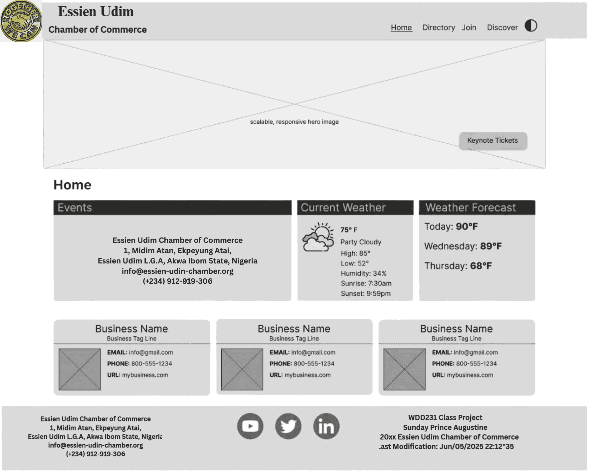
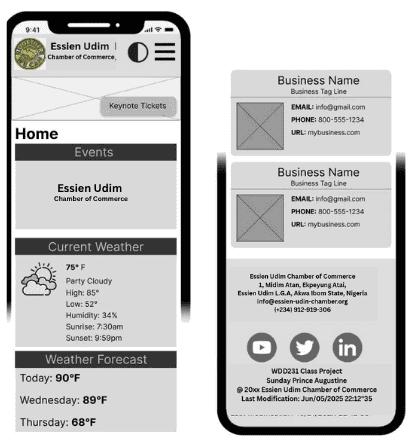

Site Plan - Essien Udim Chamber of Commerce Website
Project Overview
The Essien Udim Chamber of Commerce website is designed to promote economic growth and business
development in the Essien Udim Local Government Area. The site offers local business
directories, event announcements, weather updates, and opportunities for community engagement.
The goal is to provide a user-friendly platform that connects entrepreneurs, stakeholders,
and residents.
Project Goals
- Provide an easy-to-navigate directory of local businesses.
- Promote upcoming events and workshops.
- Showcase current weather and forecasts for planning.
- Encourage community participation and membership.
- Deliver a responsive and accessible website experience.
Target Audience
The website targets local business owners, entrepreneurs, investors, and community members
within Essien Udim L.G.A and the greater Akwa Ibom State region who seek networking,
resources, and information about the local economy.
Content Strategy
- Regularly updated business directory with contact and website links.
- Detailed event listings including dates, locations, and descriptions.
- Weather data including current conditions and short-term forecasts.
- Informative articles and resources to support business growth.
- Clear calls to action encouraging visitors to join or contact the chamber.
Website Logo
Website Map Track

Wireframes
Wireframes provide a visual blueprint of the website layout and user interface, illustrating
how the content and navigation elements are structured on different screen sizes. This
helps ensure a user-friendly and intuitive design before development begins.
Desktop View Wireframe

Figure 2: Desktop wireframe depicting a fixed horizontal navigation bar, multi-column layout for directory listings, and side content panels.
Mobile View Wireframe

Figure 1: Mobile wireframe illustrating a hamburger menu, vertical scrolling layout, and clear call-to-action button.
Color Scheme
The site uses the following color palette to maintain a consistent and visually appealing design:
- Primary Color: #1E3A8A (Deep Blue)
- Secondary Color: #4CAF50 (Green)
- Accent Color 1: #FF8C00 (Orange)
- Accent Color 2: #F44336 (Red)
Accessibility Considerations
- Use semantic HTML elements and proper heading structure.
- Provide descriptive alt text for all images.
- Ensure sufficient color contrast between text and background.
- Keyboard navigable menus and buttons.
- ARIA attributes on interactive elements where necessary.
- Responsive design for various devices and screen sizes.
Technology Stack
- HTML5 for structure and semantics
- CSS3 with Flexbox/Grid for layout and responsiveness
- JavaScript for interactive features such as view toggles
- Web Fonts from Google Fonts (Poppins and Bangers)
- Hosting on GitHub Pages